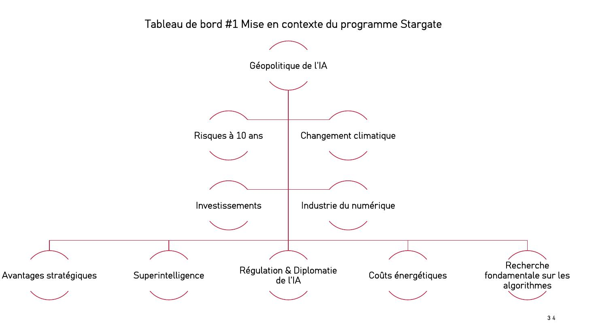

DIAPOSITIVES 3, puis 34 et 35
L’annonce, le consortium, et la facture énergétique que personne n’affiche.
Le 21 janvier 2025, sur le compte X d’OpenAI :
Announcing The Stargate Project. The Stargate Project is a new company which intends to invest $500 billion over the next four years building new AI infrastructure for OpenAI in the United States. We will begin deploying $100 billion immediately. This infrastructure will secure American leadership in AI, create hundreds of thousands of American jobs, and generate massive economic benefit for the entire world. This project will not only support the re-industrialization of the United States but also provide a strategic capability to protect the national security of America and its allies.
Qui est derrière Stargate ? OpenAI (ChatGPT), SoftBank (banque japonaise), Oracle (infrastructure informatique) et MGX (société d’investissement des Émirats arabes unis).
L’objectif affiché est double et l’exposé le souligne : réindustrialiser les États-Unis, et conserver un avantage stratégique destiné à garantir la sécurité nationale des États-Unis et de leurs alliés.
Fondée en 2015, basée à San Francisco, dirigée par Sam Altman. Microsoft détient 49 % du capital. Il s’agissait au départ d’une société de recherche enregistrée comme non-profit ; une seconde société, for profit, a été enregistrée en 2019 (OpenAI Global, LLC).
Parmi les fondateurs figurait Elon Musk, retiré en 2018 en invoquant un conflit d’intérêt avec le développement de l’IA pour les voitures autonomes chez Tesla.
Ce qui a provoqué le changement de statut : la fuite des cerveaux, les chercheurs attirés par les stock options des firmes commerciales — Google Brain, DeepMind, Facebook. OpenAI a ensuite développé un partenariat avec Microsoft, puis avec Apple.

La chaîne de raisonnement de la carte, telle que l’orateur la déroule : la géopolitique de l’IA procure des avantages stratégiques, qui supposent des investissements et un redéploiement de l’industrie numérique, mais entraînent des coûts énergétiques et des risques à dix ans.
Deux articulations méritent d’être relevées, parce qu’elles ne vont pas de soi :
C’est le passage le plus documentué de l’exposé, et le plus rarement posé en public. Projection pour le super-cluster Stargate :
| Grandeur | Projection |
|---|---|
| Nombre de méga data centers | 10 à 20 |
| Surface par site | 500 000 à 1 million de m² (100 hectares) |
| Puissance continue par data center | 1,5 à 2 GW |
| Consommation totale | 350 à 400 TWh/an |
| Centrales nucléaires actuelles nécessaires | 10 à 20 |
| Ou centrales de nouvelle génération | 20 à 60 |
| Équivalent | un pays de 15 à 20 millions d’habitants — Pays-Bas, Argentine, État de New York, État de Floride |
Points de comparaison donnés : le plus grand data center actuel se trouve en Chine (China Telecom, Mongolie intérieure, 150 MW, près d’un million de m²) ; le plus grand des États-Unis appartient à Meta, à Prineville (Oregon), 430 000 m², plus de 2 milliards de dollars d’investissement.
Le coût énergétique et l’alimentation de ces clusters est la variable qui va déterminer en grande partie la faisabilité du programme.
D’où la lecture politique que l’exposé en tire : « la dérégulation de l’industrie pétrolière prend ici tout son sens », de même que le recours massif au nucléaire.
Stargate repose sur une hypothèse, et l’exposé la nomme : les lois d’échelle (scaling laws) seraient plus efficaces pour améliorer l’IA que l’amélioration des algorithmes. Donc : plus d’investissement dans l’opérationnel (données, calcul) que dans la recherche fondamentale.
Les trois observations de Sam Altman, citées par l’orateur :
Ce pari est exactement celui que la fiche 3 vient mettre en doute, six jours plus tard.